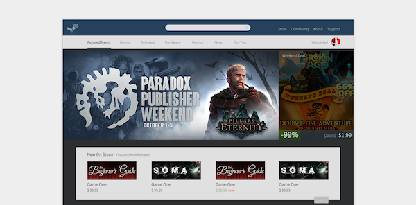

就拍 APP Design
2016.03
就拍是天津大学校内视频社交应用。上传自己的随手拍视频，和同学分享自己拍摄的短片，订阅用户，上传朋友圈视频(私密社交)，查看热门公开视频，同时也是一个校内的视频社交平台。从产品需求到整个项目的设计编写落地全部参与，算是一个比较完整的产品设计流程。
微北洋·自习室查询模块 设计
2016.01
自习室模块是微北洋中的一个功能，主要提供给学生方便快捷的途径来查询自习室。主要困难在于用户复选时的设计，以及信息分类排列的优先级选定。
TWT Web Design
2015.12
负责天外天主站的交互/视觉设计，这次相比其他项目受众更广，难度更大。做了用户调查，自己也思考了很多。除了视觉设计以外，也确定了天外天系列网站的视觉设计规范和组件库。
Wepeiyang UI Design
2015.01

微北洋 是由天外天工作室出品、面向天津大学全体师生的集新闻阅读、自习室查询、校园公告、GPA查询、 图书馆查询、就业资讯、失物招领为一体的app。
WenJin Brand Design
2014.10

问津 是天大的校内类知乎问答社区，主要做宣传设计&社区运营。拓荒计划是在问津建立之初做的推广类活动：直接邀请校内名人在问津上 回答问题 / 提问，从而扩大问津社区的影响力。任务是给问津拓荒计划做 邀请函 & Brand Design，想把活动Logo做成一眼看上去就有拓荒感觉的。
Steam Web Redesign
2014.05

只是自己想第一次试试在 web 上增加 material design 元素。至于为什么选 Steam ，大概是因为这是我经常去的网站中最需要 Redesign 的网站